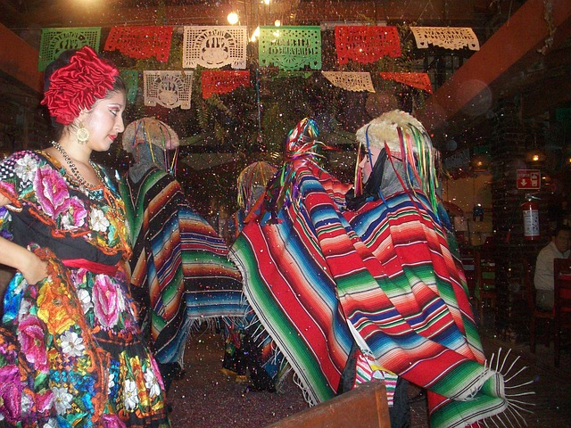

¿Quién soy yo?
Mi nombre es Carmelo Contreras Teodoro, actualmente estudio en la Benemérita Universidad Autónoma de Puebla (BUAP) en el área de Diseño Gráfico. Soy una persona risueña que le encanta escuchar música y ver partidos de la NBA, también mi deporte favorito es el basquetbol y a quién más sigo es a Stephen Curry, uno de los mejores bases sino es que el mejor. Tengo una mascota que se llama Makena la cual fue adoptada y actualmente vive con mi familia, me gusta tomar fotografías, aunque aun me hace falta mucho por aprender, pero voy mejorando. Mi artista favorito es Siddhartha y al cual pude ir a ver en su presentación en el Foro Sol el 9 de diciembre del año pasado.
- Básquetbol
- fútbol
- Americano
- karate

Mi familia
Tengo una bonita familia, algunas veces peleamos por el control de la televisión, pero nunca faltan las sonrisas en ella. Mi madre Margarita es muy agradable, se lleva con la mayoría de las personas, mi padre Carmelo es un hombre serio y le gusta que las cosas salgan bien y siempre esta aprendiendo. Tengo dos hermanas una de ellas se llama Maricarmen y la otra Janet, también tengo un hermano que se llama Cornelio, las dos tienen los mismos gustos y les encanta mucho escuchar una banda llamada Jonas Brothers, a mi hermano le gusta el basquetbol y es muy bueno en realidad. Así mismo, también tengo a mis abuelos, mi abuela Delfina le gusta platicar de sus aventuras que vivió, mi abuelo José al igual que a su señora le gusta platicar de sus aventuras. Descarga aquí una guía sobre la familia y visualiza una foto de Japón para desestresarte un poco.

- Papá: Carmelo Contreras
- Mamá: Margarita Teodoro
- Cornelio Contreras
- Janet Contreras
- Maricarmen Contreras
Mis hobbies
Lo que me gusta hacer en mis tiempos libres es escuchar música y observar lo que sucede a mi alrededor, me gustaría viajar a Japón con mi familia y amigos, así como también poder conocer a El Fioro de GEIRANGER que se encuentra en Noruega, es un lugar muy bonito para tomar fotos, lo que también me llama la atención es tomar mi cámara y salir a hacer fotografías de las cosas cotidianas de la vida. No leer jaja.
- Número
- Número
- Elemento
- Elemento
- Elemento
- Número
- Número
- Número

Bailar
Una de las actividades que deje de realizar porque ya no me metí a un grupo de danza, pero si gustas aquí te dejo un enlace para comprar cosas de baile. Es importante tomar agua (H2O).
Ciclismo
Una de las actividades que realizó, pero que por el momento pospuse porque a mi bicicleta se le rompió la tijera y por la cual casi pierdo un ojo. Si te sirve puedes usar esta formula con la que puedes calcular H2=a2++b2; donde a y b son catetos y H es la hipotenusa.
Videojuegos
Me gustaba sentarme en las maquinitas y jugar con mis compañeros, pero por el momento no podemos hacerlo, ya que, cada uno esta en sus cosas y también por la falta de que algunos ya tienen que cumplir responsabilidades que los mantienen más ocupados.